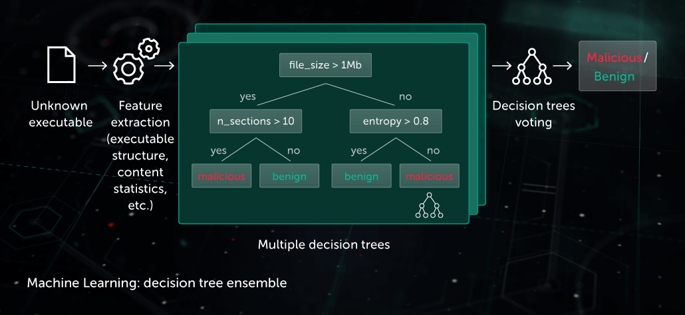
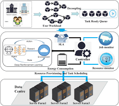
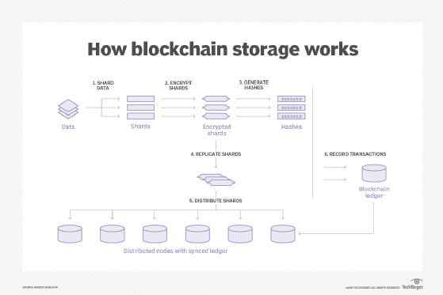
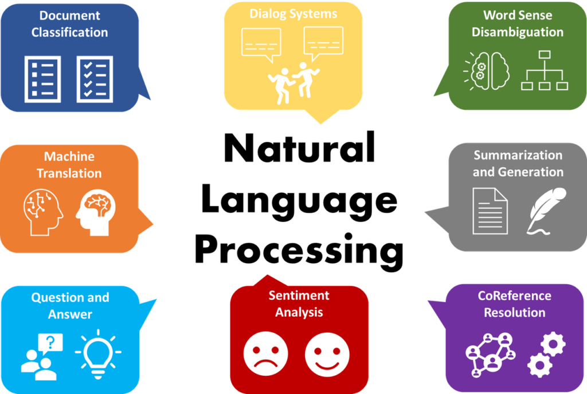

Welcome to our research page, where we showcase our commitment to advancing knowledge and making meaningful contributions to our field. At our department, pushing the boundaries of knowledge and possibility is our joyful obsession, and we celebrate fundamental discoveries and practical applications alike. As educators, we also value research as a potent form of learning by doing. Through our Undergraduate Research Opportunities Program (UROP), more than 85% of undergraduates enrich their education through engaging in frontline, faculty-led research. Explore our ongoing projects, meet the research team, and discover our latest publications.
Our research projects cover a wide range of topics, from cutting-edge technology to social sciences. Here are some of our current focus areas:
The Computer Science Department is actively engaged in cutting-edge research, employing machine learning techniques to enhance cybersecurity. By analyzing vast datasets and identifying patterns, our researchers aim to develop robust systems capable of proactively detecting and preventing cyber attacks. This work is crucial in an increasingly digital landscape, where the sophistication of threats demands advanced and adaptive defense mechanisms.
Our researchers are dedicated to advancing the field of cloud computing by developing sophisticated algorithms for resource allocation. This involves creating intelligent systems that optimize the distribution of computing resources, enhancing efficiency, and reducing latency. The goal is to ensure that cloud services operate seamlessly, meeting the diverse needs of users and applications while maximizing overall performance.
The exploration of blockchain technology is a key focus, with the aim of revolutionizing data storage practices. Our researchers are investigating how blockchain can provide secure, transparent, and decentralized storage solutions. This has the potential to address concerns related to data integrity, privacy, and security, making it a promising avenue for future data management systems.
In the realm of artificial intelligence, our department is actively involved in crafting intelligent chatbots for customer service applications. These chatbots utilize natural language processing and machine learning to understand and respond to user queries effectively. The objective is to enhance customer experiences by providing timely and accurate information, ultimately improving the efficiency of customer service interactions.
Deep learning's potential in natural language processing is a subject of in-depth investigation within our department. Researchers are exploring how deep neural networks can understand and generate human-like language, enabling advancements in language translation, sentiment analysis, and other language-related tasks. This research contributes to the evolution of language technologies and their practical applications across various domains.
Stay informed about our latest research findings by exploring our recent publications. Here are some of our featured works:
In a recent publication from our Computer Science Department, researchers delved into the application of machine learning to enhance cybersecurity measures. The department dedicated a case study to a group of students to use a Deep learning network to detect anomalies. They achieved excellent results in supervised network intrusion detection. They also showed that using only the first three octets of IP addresses can be efficient in handling the use of dynamic IP addresses, representing the strangeness of DNN in the attendance of DHCP. This approach showed that autoencoders could be used to detect anomalies wherever they trained on expected flows.
They proposed Recurrent Neural Network RNN and Deep Neural Network DNN with ML techniques related to anomaly detection in the network. They also conducted local experiments showing the feasibility of the DNN approach to network flow traffic analysis. This survey also investigated DNN models’ effectiveness in network flow traffic analysis by introducing the conducting experiments with their FCN model. This approach shows encouraging results with enhanced accuracy in detecting anomalies compared to the conventional techniques of ML such as SVM, random forest, and Ad boosting.
They presented a hybrid data processing model for detecting anomalies in the network that influences the optimization and Convolution Neural Network CNN. Improvements in the GWO and CNN training approaches improved with exploration and initial population capture capabilities and restored failure functionality. These extended alternatives are mentioned as Improved-GWO and Improved CNN. The proposed model runs in two stages for the detection anomaly in the network. In the first stage, improved GWO was utilized for feature selection to attain an ideal trade-off among two objectives to reduce the frailer rate and minimize the feature set. In the second stage, improved CNN was utilized for the classification of network anomalies. The author said that the proposed model’s efficiency is evaluated with a benchmark (DARPA’98 and KDD’99) and artificial datasets. They showed the results obtained, which validate that the proposed cloud-based anomaly detection model was superior to the other related works utilized for anomaly detection in the network, accuracy, detection rate, false-positive rate, and F-score. The proposed model shows an overall enhancement of 8.25%, 4.08%, and 3.62% in detection rate, false positives, and accuracy, respectively, related to standard GWO with CNN.
Published research from our department explores cutting-edge algorithms for optimized resource allocation in cloud computing environments. In a recent groundbreaking publication from the Computer Science Department at the University of Ghana, researchers addressed the crucial need to optimize the allocation of educational resources. Faced with the challenges posed by the rapid development of the big data environment, the traditional educational landscape required innovative solutions. The study emphasizes that, amidst the plethora of information and diverse cultural influences, the optimization of educational resource allocation is imperative for creating a new paradigm in education.
The researchers propose the application of computer vision multimodal learning in this optimization process, aiming to deeply integrate new educational strategies, explore novel ideas, and foster an environment that aligns with the evolving needs of students in the era of big data. The study specifically delves into the multi-modal teaching mode of computer vision, evaluating its effectiveness in the optimal allocation of innovative education resources within universities. By constructing an ideology instructional resource model based on an improved collaborative filtering algorithm, the research addresses the challenges posed by the simplicity of current innovative education methods.
The developed model, implemented on the JavaEE platform, incorporates features like similarity calculation and resource recommendation, effectively mitigating issues such as users' cold start and ensuring personalized recommendations for innovative education resources. This publication represents a significant step toward promoting the optimal allocation of innovative education resources within university settings.
The demand for Blockchain innovation and the significance of its application has inspired ever-progressing exploration in various scientific and practical areas.
Even though it is still in the initial testing stage, the blockchain is being viewed as a progressive solution to address present-day technology concerns, such as decentralization, identity, trust, character, ownership of data, and information-driven choices.
Simultaneously, the world is facing an increase in the diversity and quantity of digital information produced by machines and users. While effectively looking for the ideal approach to storing and processing cloud data, the blockchain innovation provides significant inputs.
This article reviews the application of blockchain technology for securing cloud storage.
In recent years, cloud technology has attained an emerging trend by showing a possibility in both academia and industry for its efficiency and availability. Although it is a widely accepted technology, with an outburst of data origins, there has been an increased issue of storage and usage of
data owing to the inability of a conventional data management tool to manage the exponentially.growing data. The traditional cloud storage model comprised a back-end platform that could be storage or server, a front-end platform that could be a mobile device or a client, and a network,
possibly an intranet or internet. Attention is given to cloud technology with this outburst of data origin by the researchers in presenting solutions for the intricacies of storage and usability in cloud
storage technology. 
The Department provided a unique opportunity for students to engage in research focused on blockchain technology for secure data storage. These students, driven by curiosity and innovation, made noteworthy discoveries in the realm of secure data storage leveraging blockchain.
Their research unveiled novel insights into the application of blockchain as a robust and decentralized solution for safeguarding sensitive information. By harnessing the inherent security features of blockchain, such as immutability and cryptographic integrity, the students have explored the potential to revolutionize data storage practices.
The discoveries included the identification of enhanced data protection mechanisms, resistance to tampering, and the establishment of a transparent and auditable data storage infrastructure. This research not only contributes to the academic understanding of blockchain but also holds promise for real-world applications where data security is of paramount importance.
The department's commitment to fostering a culture of research and exploration empowers students to make meaningful contributions to cutting-edge technologies, ensuring that they play an active role in shaping the future of secure data storage solutions.
This study proposes an intelligent knowledge-based conversational agent system architecture to support customer services in e-commerce sales and marketing.
The Department opened a promising avenue for students to engage in cutting-edge research on Intelligent Chatbots for Customer Service. This initiative empowered students to explore the intersection of artificial intelligence and customer interaction, contributing to advancements in technology and service delivery. Through dedicated research efforts, students delved into the development and enhancement of intelligent chatbots capable of understanding and responding to customer inquiries effectively.
Discoveries made during this research endeavour included the refinement of natural language processing algorithms, enabling chatbots to comprehend diverse user queries with heightened accuracy.
Additionally, students explored innovative approaches to ensure seamless integration of chatbots into various customer service scenarios, thereby improving overall user experience and satisfaction.
These discoveries mark a significant contribution to the evolving landscape of customer service technology and showcase the department's commitment to fostering hands-on research experiences for its students.
In a recent publication, our students investigated the effectiveness of deep learning in natural language processing (NLP). They unveiled novel insights into the application of deep learning techniques for NLP. They successfully developed and implemented models that showcase remarkable capabilities in extracting nuanced meanings, understanding context, and improving language comprehension. These discoveries contributed significantly to the ongoing evolution of natural language processing methodologies.
In particular, the research emphasized the effectiveness of deep learning in enhancing various NLP applications, such as sentiment analysis, language translation, and text summarization. The findings underscore the potential for innovative solutions that leverage deep learning algorithms to address the intricate challenges associated with natural language understanding.
Furthermore, student researchers actively explored the intersection of deep learning and linguistic diversity, recognizing the importance of developing inclusive and culturally aware NLP models. This approach ensured that NLP technologies could effectively handle a wide range of languages, dialects, and linguistic nuances, thereby broadening the scope and impact of language processing applications.
The department's commitment to fostering student-led research in Deep Learning for Natural Language Processing not only provides valuable hands-on experience but also contributes to the advancement of knowledge in this rapidly evolving field. The discoveries made by students underscore the department's dedication to pushing the boundaries of technology and preparing the next generation of innovators in the realm of artificial intelligence and language technology.